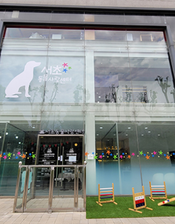

센터소개
서초동물사랑센터는?
유기·유실 동물을 줄이고
올바른 반려동물 문화를 조성하기 위해
2018년 12월 4일
서울시 양재천로 19길 22에 설립
하였습니다.

반려 동물도 행복한 서초
“반려동물과 함께 행복한 서초” 를 만들어가는
서초동물사랑센터입니다.
유실∙유기견의 반환 및 입양을 돕는 입양센터이자
반려견 기초교육 프로그램을 제공하는 교육센터입니다.
1층 실습교육장, 이론교육장, 접견실
2층 입소견놀이터, 계류실, 미용실, 사무실로 운영되고 있습니다.